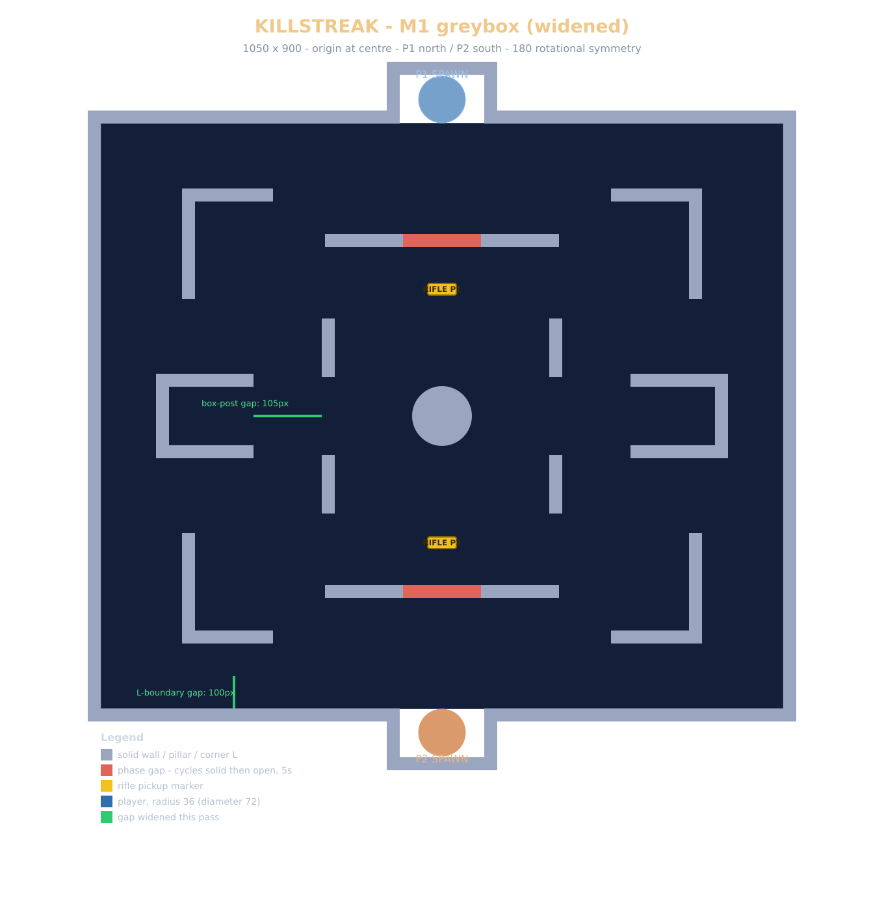

Work / KILLSTREAK
KILLSTREAK
A top-down 1v1 shooter, built in Godot, where the map is always visible but the opponent is not: a vision cone decides what either player can actually see.
- Role
- Solo: design, gameplay and network programming
- Engine
- Godot 4, GDScript
- Genre
- Top-down 1v1 tactical shooter
- Status
- Milestone 1 (networked prototype) built; first playtest next
The pitch
KILLSTREAK is played from directly above. The camera shows the whole arena's geometry at all times, but the opponent, every gun on the ground and every thrown weapon only render when they fall inside your vision cone, a slice of the map in front of wherever you are aiming. Checking a doorway means turning your gun away from whatever is in front of you right now.
It is a game of information: knowing where the opponent is, and whether they know where you are. There is no carryover between rounds and no progression, just a clean slate every time. Standing still is the most accurate way to shoot, but the map is built so that never moving loses anyway. Kills take real time, too: about 1.5 to 2.5 seconds with the pistol depending on range, roughly half that with the rifle, which is long enough for whoever gets caught out to fight back.
Vision and sound
The vision cone is what actually hides things. Everything exists in the world, but none of it draws to your screen unless it is inside your cone, and the edge is a hard cutoff rather than a fade, so what you see is exactly what your position and aim earn you.
Sound covers the gap the cone leaves. Footsteps outside your vision draw as an arc of possible bearings instead of an exact position: narrower for a loud sound like running, wider for a quiet one like walking. The true direction sits off centre within that arc on purpose, so you can't just aim at its middle.
Ground weapons
Everyone starts with a pistol. Every stronger weapon is a pickup on the ground, and you can only hold one gun at a time, so taking a new one means throwing your current one away first. Nothing respawns mid-round, so a bad trade can leave you weaponless. A thrown weapon does damage on impact, bounces off walls, and keeps whatever ammo it had loaded: throwing an empty pistol at someone can literally arm them.

Networking
Milestone 1 was networked from day one rather than retrofitted later: server-authoritative, with clients sending input and the server deciding what happened. All gameplay state, down to the map's random numbers, can be captured and restored as a single snapshot on a fixed timestep. That discipline is what let internet play be pulled forward: client-side prediction for movement plugged into an already deterministic simulation.
Shots are the one place prediction and authority meet. Movement is predicted so it feels instant, but hit detection stays on the server, which checks each shot against the opponent's position rewound by the shooter's round-trip time. A game built on sudden close-range reveals is the last place you want a guessed outcome.
Where it stands
2 of 5 steps done
- Done: Milestone 1, a LAN-playable prototype with vision-cone rendering, hitscan combat, the pickup-and-throw loop and round reset.
- Done: internet play through a dedicated host, with movement prediction and lag-compensated hits.
- Next: a full playtest on two separate machines, then tuning spread, time-to-kill and timings against real sessions.
- Wiring real sound into the audio-visualisation system, which is already built.
- Round structure and the match-level streak win condition, with grenades and penetrable cover under consideration.
The question the playtest exists to answer: does contesting weapons under vision cones produce real decisions, or just two players holding angles? The design document is available on request.
Sign up to playtest
I'm looking for people to play the first two-machine sessions. Matches are short, and all I ask is ten minutes of honest feedback afterwards.